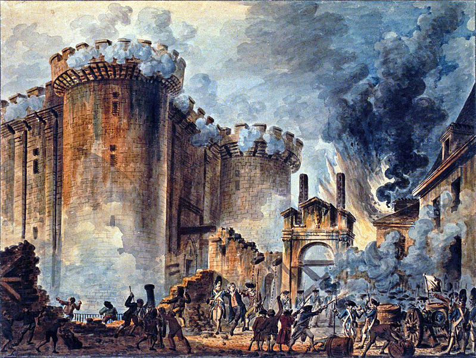
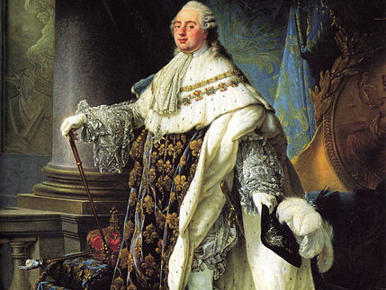
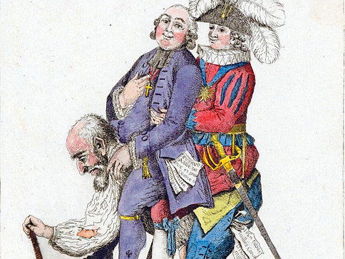
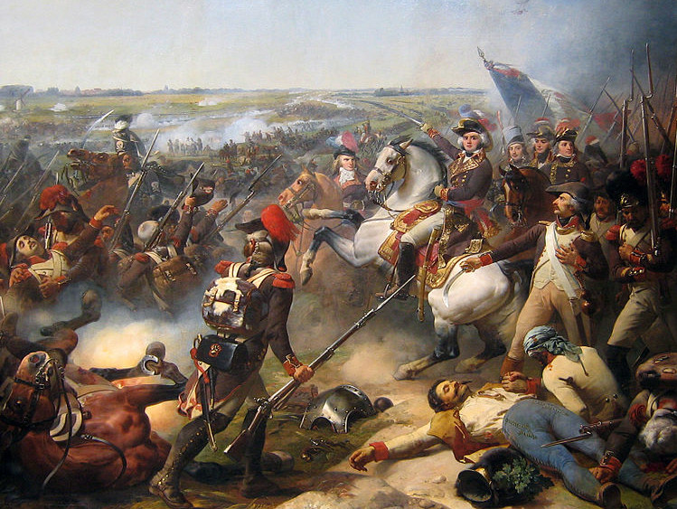

چند سوال؟
؟
- انقلاب فرانسه چه نوع انقلابی بود؟
- چرا انقلاب کردن؟
- اولین جرقه انقلاب چی بود؟
- چه اتفاق مهمی افتاده؟
- نتیجهی این انقلاب چی شد؟
انقلاب فرانسه
- زمان: سال ۱۷۸۹ تا ۱۷۹۹ میلادی
- چه کسانی: مردم فرانسه
- علیه: سلطنت لوئی شانزدهم، نظام فئودالی، اشراف و روحانیون
- نوع انقلاب: قرمز، بیش از چهل هزار کشته
- دستاوردها: اصول جدایی دین از سیاست، روشنگری، ملیگرایی، دموکراسی و حقوق شهروندی
چرا انقلاب کردن؟ (دلایل اقتصادی)
- ورشکستگی مالی، جنگهای لوئی پانزدهم و کمک لوئی شانزدهم به آمریکاییها
- سیستم اقتصادی بیکفایت و سیستم مالیاتی ناتوان
- دیمه کلیسا کاتولیک بر محصولات کشاورزی
- ولخرجیهای اشراف دربار لوئی شانزدهم
- بیکاری، قحطی، سو تغذیه، نبود بازرگانی داخلی
چرا انقلاب کردن؟ (دلایل اجتماعی)
- نفرت از حکومت استبدادی سلطنتی
- خشم طبقه بازرگان و اهل فن از امتیازات و تسلط اشراف
- خشم کشاورزان، مستمریگیران، بر امتیازات اربابوار اشراف
- ناراحتی بر امتیازات روحانیون و آزادی ادیان
- آزادی و جمهوریت
اولین جرقه انقلاب!

پدیدآور، Jean-Pierre Houël
اعدام لوئی شانزدهم و همسرش ماری آنتوانت

پدیدآور، Den fjättrade ankan
سواری اشراف و روحانیون بر کشاورز

پدیدآور، ناشناس
شرکت زنان کارگر در انقلاب
 پدیدآور، ناشناس
پدیدآور، ناشناس
جنگ ارتش انقلاب فرانسه با استرالیا، آلمان و بریتانیا

پدیدآور، Jean Baptiste Mauzaisse
Liberté, Égalité, Fraternité
پدیدآور، Frédéric Virot
پدیدآور، Frédéric Virot